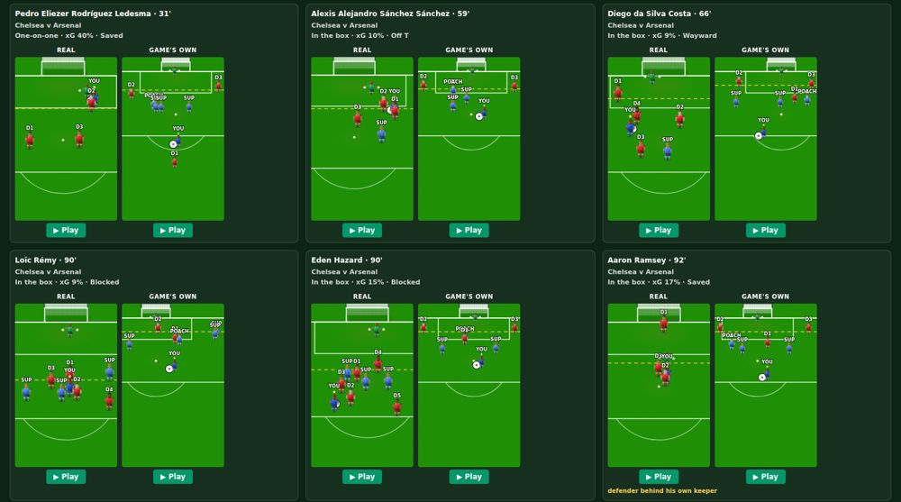
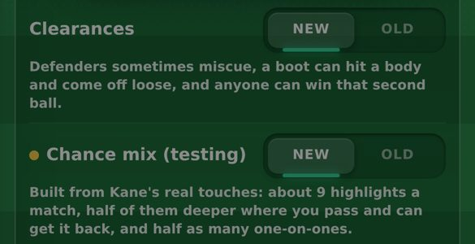
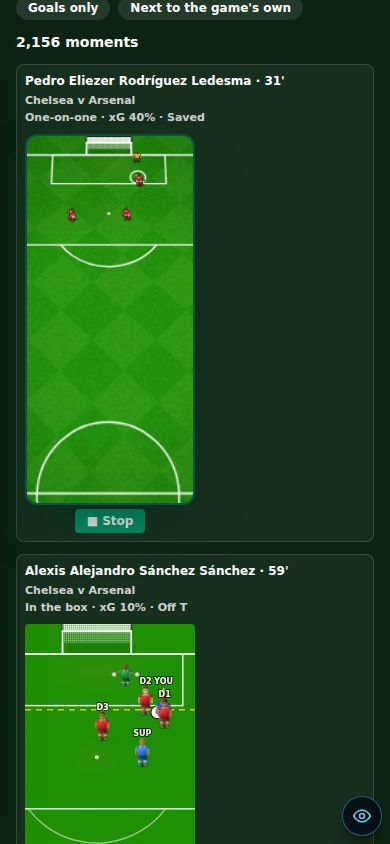

9 October 2026 · branch Mikey · star tests: 296 of 299 passing (the 3 failing are 3D tests that fail on main too)
7,807Real Premier League shots turned into chances you can play (testing only)
6.1 → 9.0Highlights a match for a striker, with Chances set to New
68% vs 20%The same shooter scores a game-made one-on-one 68% of the time, a real one 20%
OldStays the default. New is opt-in while it is tested
Check these
Headline: real football says our close chances are too easy
Real positions from every 2015/16 Premier League shot now play in our engine. They show what our own chances get wrong.
Problem: nobody could say if the game's chances look and play like real football. Why: every chance is drawn or generated, never taken from a real match. Fix: StatsBomb's free data gives where every player stood at each real shot. Each shot became a game chance: the real shooter is you, and the real keeper, defenders and team-mates stand where they stood. A fixed test shooter then took every chance six times. measured: 1,800 shots a band
Real xG under 3%
our engine 9%
Real xG 10–20%
21%
Real xG over 35%
38%
Good: the better the real chance, the more often it goes in for us too. The real pictures carry real information.
One-on-one: game-made
68% scored
One-on-one: real
20% scored
The gap is mostly where people stand. Real keepers stand 4.5 m off their line, ours 1.1 m. Real shooters have a defender within 3 m (1.0 on average), ours 0.3. Not changed yet (Mikey: keep it out for now).

Each pair: the real chance (left) and one the game made of the same kind (right). Look at how crowded the real ones are.
Added
Chance mix (testing): built from Harry Kane's real touches
Problem: a striker got about 6 highlights a match, nearly all of them chances near goal. Kane is on the ball 33 times a match, half of it 35 m or more from goal (12 England matches). Why: the match only came to you when your side made a chance. Fix: with Chances on New, your side's spells in midfield and the final third can find you too ("You drop off into midfield and get on the ball"). About half of open play is now deep: a pass, build-up or a through ball, where you pass it and can get it back. One-on-ones drop from 1 in 8 highlights to 1 in 17. Your own shots stay about the same, so goals should too. measured: 600 matches
Highlights a match
6.1 9.0
Deep touches
2.0 3.8
One-on-ones
0.67 0.49
Your own shots
2.1 2.5
A striker at an even match. Kane's real figure is 2.5 shots a match. Old is still the default: pick New in Settings → More → Match → Chance mix (testing), or pick the Preview version. The setting is per phone. row seen at phone size

The new row, under Clearances. Old is the default; Preview turns it on.
Real moments page (admin, testing only)
Every real 2015/16 Premier League shot (no headers, penalties or direct free kicks) and Kane's touches at the 2022 World Cup and Euro 2024, drawn in the game's camera. Filter by kind, by how likely the real shot was to go in, or goals only. ▶ Play runs the real match on it. "Next to the game's own" puts a game-made chance of the same kind beside each one. The data is loaded from a file on your device; it is not in the game or the repo. seen at phone size

Playing a real chance (Pedro, Chelsea v Arsenal, real xG 40%, saved) in the real match.
Known issues
Highlights still follow how good your team is LOW
New adds about 40% at every level: 50 v 80 gives 3.1 → 4.4 a match, 70 v 70 gives 6.7 → 9.6, 80 v 60 gives 9.9 → 14.0 (400 simulated matches each). One real match on New (weak side v Ipswich, FA Cup) gave 4. Say if a strong side's 14 is too many.
Three 3D tests fail on main LOW
3D assets list out of date, Headers & Volleys scoring 5.7 in 10 (wanted 3–5), Wembley sessions short. They fail on main before this round too; not from this change.
Chances New: goals a match estimated, not played LOW
Worked out from each kind's measured scoring rate: about 0.92 → 0.99 of your own goals a match. Play a few matches on New to check.
The real mix is the same for every position LOW
It comes from a striker (Kane). A winger on New gets the same kinds as a striker; how often the ball finds him is still his own.
Our close chances are easier than real ones LOW
Keeper 1.1 m off his line against 4.5 m for real. Kept out on purpose for now.
Add numpy to the setup script LOW
Change the line to apt-get update && apt-get install -y blender python3-numpy.
Previous versions
v0.13 · 8 October 2026 · Play-off, cup and European round-ups with animated brackets; the real UEFA knockout; two-legged League Cup semis; ±25% wage when your club goes down or up; relegation day
v0.12 · 8 October 2026 · The ovation's hugs, dap-ups, pat and claps made in Blender; the farewell's 3D ovation checked in a real match
v0.11 · 8 October 2026 · 3D standing ovation; centre-back Golden Boot and day-one line-ups fixed; more assists; clearances, negotiations and Relations reworked
v0.10 · 4 October 2026 · Relationships rebuilt: bars that move slowly, one game per relationship, happiness decides recovery, no Sponsors bar; injuries switched off
v0.9 · 3 October 2026 · XP rebuilt (slower start, XP by the minute, no double pay) and the XP Book to edit every amount; 3D garden, North/South 2026/27, Club Data
v0.8 · 30 September 2026 · Sponsors Revamp: brands send offers, deal slots by fame, weekly fees, targets, brand happiness, bidding wars, buy-outs and scandals
v0.7 · 30 September 2026 · A new 1-10 star career rating separate from overall, 7 boots, dearer Style, 2 training sessions a week, restyled training, contract terms
v0.6 · 27 September 2026 · Five levels of every boot and lifestyle item, a moving ball on the strike screen, commentary that barely repeats, new chants
v0.5 · 26 September 2026 · How you get picked: win your shirt from a better-rated rival, form over 3 games, subs when the score says, cup rotation
v0.4 · 25 September 2026 · Training rebuilt the New Star Soccer way: 30 fixed levels, three tries, stars raise the skill; pace, vision and free kick matter in matches
v0.3 · 25 September 2026 · What you see on the pitch matches where people stand: nearer players and the ball drawn right, corners from the flag; trophy pictures, instant energy modes, feed likes
v0.2 · 22 September 2026 · Energy master plan: in-match energy modes, a real ticking clock, half-time KIB cans, rest days, tougher fatigue rules
v0.1 · 21 September 2026 · Economy, fame and reputation rebuild: Premier League wages to ★100k, fame levels, one reputation number, 50-season careers